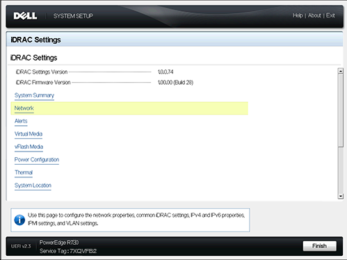
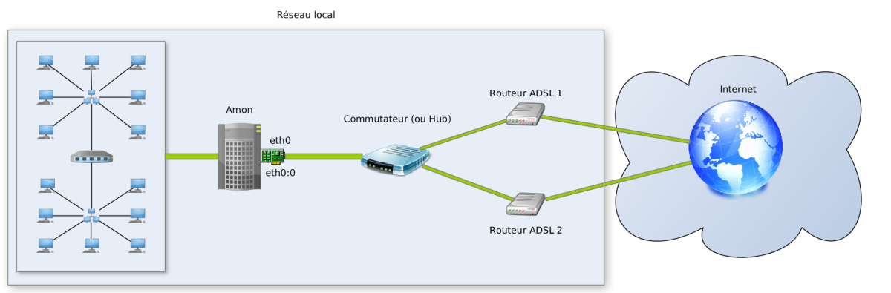
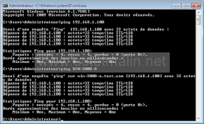

1. Configuration via l’iDRAC
I was able to configure the server remotely using iDRAC, which allowed me to manage the hardware without being physically present.

2. Aggregation Configuration
The next step involved configuring network interface aggregation to ensure better connection and redundancy.

3. Opening a Port in the DNS
I also opened a port in the DNS to allow access to the services hosted on the server.

4. Transfer of VMs
Finally, this server will transfer all the VMs, thereby centralizing the management of virtual machines.